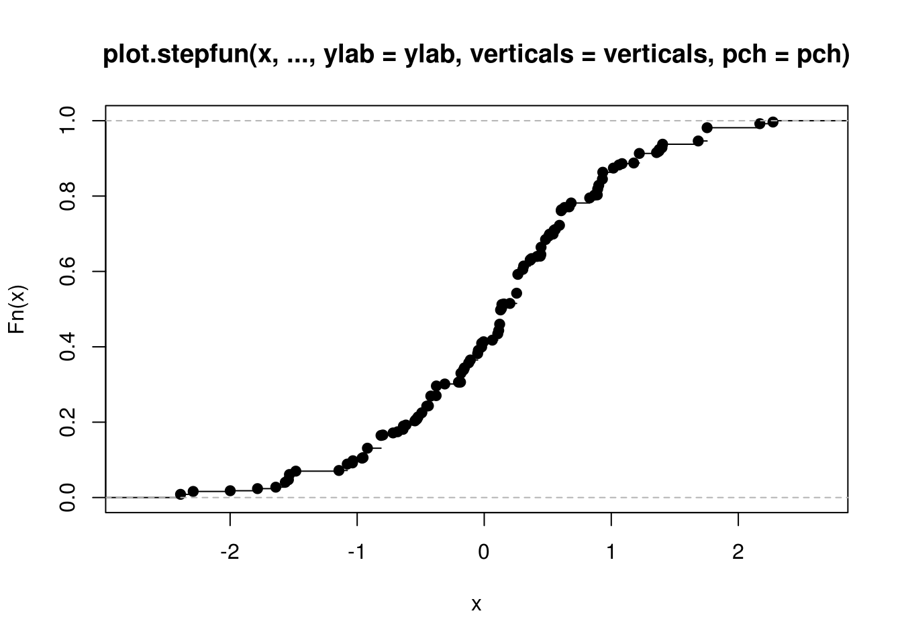

BMisc includes miscellaneous functions for working with panel data, quantiles, and printing results.
You can install BMisc from github with:
# install.packages("devtools")
devtools::install_github("bcallaway11/BMisc")or from CRAN with:
install.packages("BMisc")One of the most useful functions in the BMisc package is makeDist which takes a vector of observations and turns them into a distribution function.
y <- rnorm(100)
y <- y[order(y)]
u <- runif(100)
u <- u[order(u)]
F <- makeDist(y,u)
class(F)
#> [1] "ecdf" "stepfun" "function"
plot(F)
Another useful function is the makeBalancedPanel function which drops observations from a panel dataset which are not available in all time periods.
id <- rep(seq(1,100,1),2) ## individual ids for setting up a two period panel
t <- rep(seq(1,2),100) ## time periods
y <- rnorm(200) ## outcomes
dta <- data.frame(id=id, t=t, y=y) ## make into data frame
dta <- dta[-7,] ## drop the 7th row from the dataset (which creates an unbalanced panel)
nrow(dta)
#> [1] 199
dta <- makeBalancedPanel(dta, idname="id", tname="t")
nrow(dta) ## now all the observations with missing data in any period are dropped
#> [1] 198